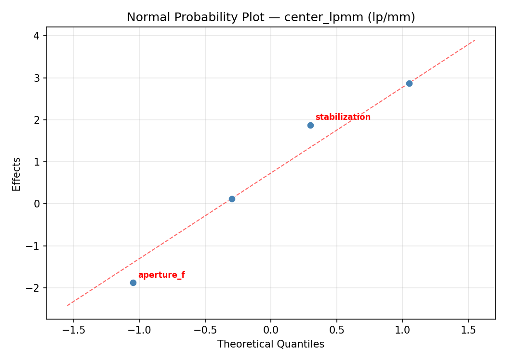
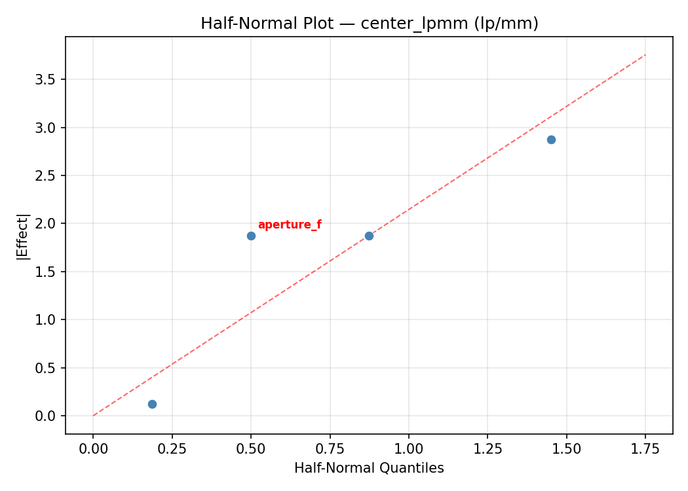
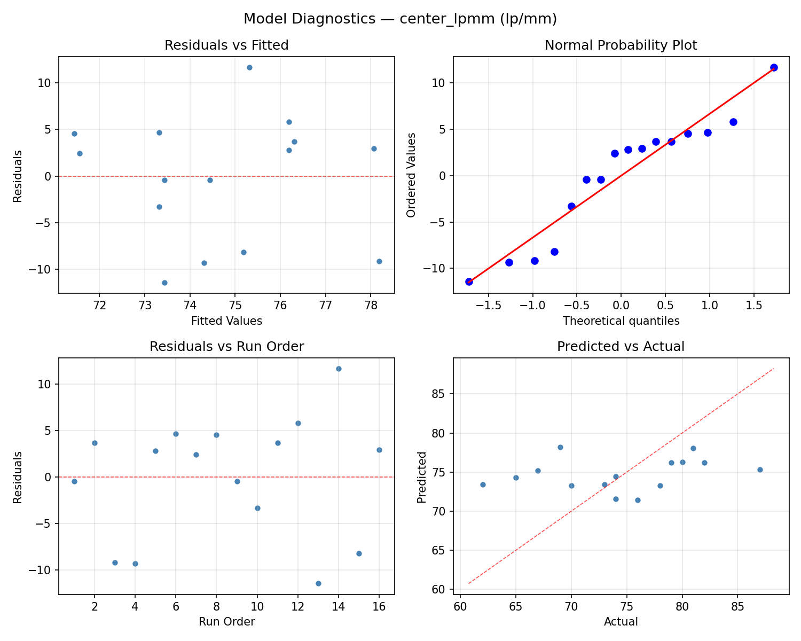
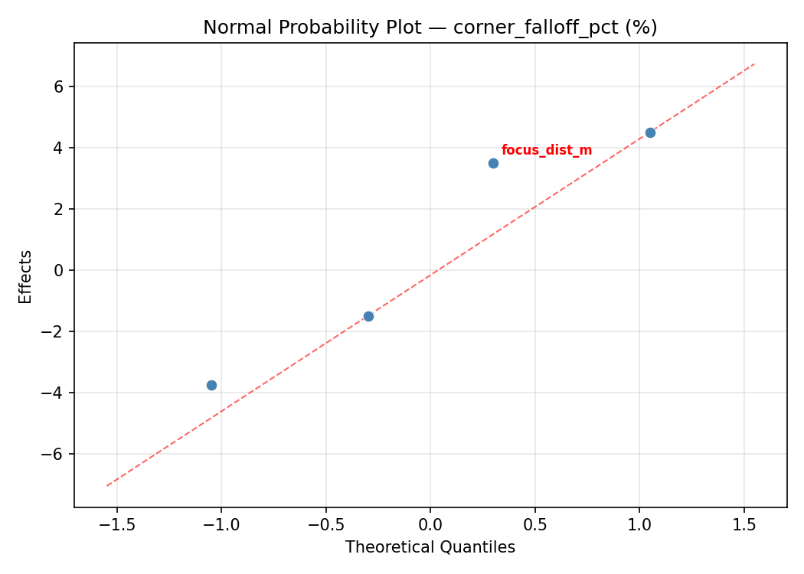
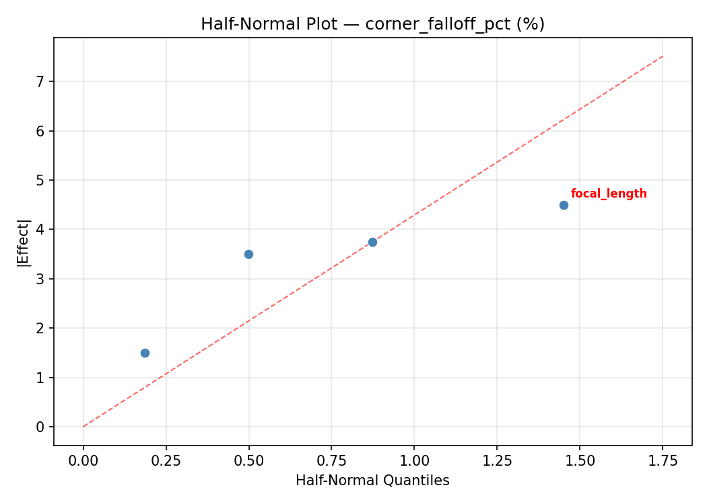
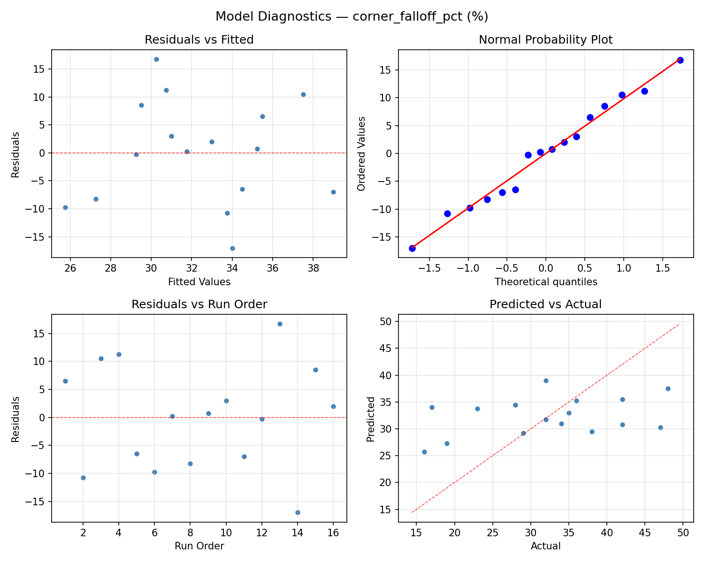

Summary
This experiment investigates lens sharpness testing. Full factorial of aperture, focal length, focus distance, and image stabilization to maximize center sharpness and minimize corner softness.
The design varies 4 factors: aperture f (f-stop), ranging from 2.8 to 11, focal length (mm), ranging from 24 to 70, focus dist m (m), ranging from 1 to 10, and stabilization, ranging from off to on. The goal is to optimize 2 responses: center lpmm (lp/mm) (maximize) and corner falloff pct (%) (minimize). Fixed conditions held constant across all runs include body = full_frame, iso = 200.
A full factorial design was used to explore all 16 possible combinations of the 4 factors at two levels. This guarantees that every main effect and interaction can be estimated independently, at the cost of a larger experiment (16 runs).
Quadratic response surface models were fitted to capture potential curvature and factor interactions. The RSM contour plots below visualize how pairs of factors jointly affect each response.
Key Findings
For center lpmm, the most influential factors were focal length (57.3%), focus dist m (18.5%), stabilization (16.9%). The best observed value was 87.0 (at aperture f = 11, focal length = 70, focus dist m = 1).
For corner falloff pct, the most influential factors were focal length (49.3%), focus dist m (24.0%), aperture f (17.3%). The best observed value was 16.0 (at aperture f = 11, focal length = 24, focus dist m = 10).
Recommended Next Steps
- Consider whether any fixed factors should be varied in a future study.
Experimental Setup
Factors
| Factor | Low | High | Unit |
|---|
aperture_f | 2.8 | 11 | f-stop |
focal_length | 24 | 70 | mm |
focus_dist_m | 1 | 10 | m |
stabilization | off | on | |
Fixed: body = full_frame, iso = 200
Responses
| Response | Direction | Unit |
|---|
center_lpmm | ↑ maximize | lp/mm |
corner_falloff_pct | ↓ minimize | % |
Configuration
{
"metadata": {
"name": "Lens Sharpness Testing",
"description": "Full factorial of aperture, focal length, focus distance, and image stabilization to maximize center sharpness and minimize corner softness"
},
"factors": [
{
"name": "aperture_f",
"levels": [
"2.8",
"11"
],
"type": "continuous",
"unit": "f-stop"
},
{
"name": "focal_length",
"levels": [
"24",
"70"
],
"type": "continuous",
"unit": "mm"
},
{
"name": "focus_dist_m",
"levels": [
"1",
"10"
],
"type": "continuous",
"unit": "m"
},
{
"name": "stabilization",
"levels": [
"off",
"on"
],
"type": "categorical",
"unit": ""
}
],
"fixed_factors": {
"body": "full_frame",
"iso": "200"
},
"responses": [
{
"name": "center_lpmm",
"optimize": "maximize",
"unit": "lp/mm"
},
{
"name": "corner_falloff_pct",
"optimize": "minimize",
"unit": "%"
}
],
"settings": {
"operation": "full_factorial",
"test_script": "use_cases/149_lens_sharpness/sim.sh"
}
}
Experimental Matrix
The Full Factorial Design produces 16 runs. Each row is one experiment with specific factor settings.
| Run | aperture_f | focal_length | focus_dist_m | stabilization |
|---|
| 1 | 2.8 | 70 | 10 | on |
| 2 | 11 | 24 | 1 | on |
| 3 | 2.8 | 70 | 1 | on |
| 4 | 2.8 | 70 | 10 | off |
| 5 | 11 | 70 | 10 | off |
| 6 | 11 | 24 | 10 | off |
| 7 | 11 | 70 | 1 | off |
| 8 | 11 | 24 | 1 | off |
| 9 | 2.8 | 24 | 1 | on |
| 10 | 2.8 | 24 | 10 | off |
| 11 | 11 | 70 | 1 | on |
| 12 | 11 | 70 | 10 | on |
| 13 | 2.8 | 70 | 1 | off |
| 14 | 11 | 24 | 10 | on |
| 15 | 2.8 | 24 | 1 | off |
| 16 | 2.8 | 24 | 10 | on |
Step-by-Step Workflow
1
Preview the design
$ python doe.py info --config use_cases/149_lens_sharpness/config.json
2
Generate the runner script
$ python doe.py generate --config use_cases/149_lens_sharpness/config.json \
--output use_cases/149_lens_sharpness/results/run.sh --seed 42
3
Execute the experiments
$ bash use_cases/149_lens_sharpness/results/run.sh
4
Analyze results
$ python doe.py analyze --config use_cases/149_lens_sharpness/config.json
5
Get optimization recommendations
$ python doe.py optimize --config use_cases/149_lens_sharpness/config.json
6
Multi-objective optimization
With 2 competing responses, use --multi to find the best compromise via Derringer–Suich desirability.
$ python doe.py optimize --config use_cases/149_lens_sharpness/config.json --multi
7
Generate the HTML report
$ python doe.py report --config use_cases/149_lens_sharpness/config.json \
--output use_cases/149_lens_sharpness/results/report.html
Features Exercised
| Feature | Value |
|---|
| Design type | full_factorial |
| Factor types | continuous (3), categorical (1) |
| Arg style | double-dash |
| Responses | 2 (center_lpmm ↑, corner_falloff_pct ↓) |
| Total runs | 16 |
Analysis Results
Generated from actual experiment runs using the DOE Helper Tool.
Response: center_lpmm
Top factors: focal_length (57.3%), focus_dist_m (18.5%), stabilization (16.9%).
ANOVA
| Source | DF | SS | MS | F | p-value |
|---|
| Source | DF | SS | MS | F | p-value |
| aperture_f | 1 | 5.0625 | 5.0625 | 0.330 | 0.5908 |
| focal_length | 1 | 315.0625 | 315.0625 | 20.509 | 0.0062 |
| focus_dist_m | 1 | 33.0625 | 33.0625 | 2.152 | 0.2023 |
| stabilization | 1 | 27.5625 | 27.5625 | 1.794 | 0.2381 |
| aperture_f*focal_length | 1 | 115.5625 | 115.5625 | 7.522 | 0.0407 |
| aperture_f*focus_dist_m | 1 | 3.0625 | 3.0625 | 0.199 | 0.6739 |
| aperture_f*stabilization | 1 | 76.5625 | 76.5625 | 4.984 | 0.0759 |
| focal_length*focus_dist_m | 1 | 7.5625 | 7.5625 | 0.492 | 0.5142 |
| focal_length*stabilization | 1 | 5.0625 | 5.0625 | 0.330 | 0.5908 |
| focus_dist_m*stabilization | 1 | 39.0625 | 39.0625 | 2.543 | 0.1717 |
| Error | 5 | 76.8125 | 15.3625 | | |
| Total | 15 | 704.4375 | 46.9625 | | |
Pareto Chart

Main Effects Plot

Normal Probability Plot of Effects

Half-Normal Plot of Effects

Model Diagnostics

Response: corner_falloff_pct
Top factors: focal_length (49.3%), focus_dist_m (24.0%), aperture_f (17.3%).
ANOVA
| Source | DF | SS | MS | F | p-value |
|---|
| Source | DF | SS | MS | F | p-value |
| aperture_f | 1 | 42.2500 | 42.2500 | 0.397 | 0.5564 |
| focal_length | 1 | 342.2500 | 342.2500 | 3.215 | 0.1329 |
| focus_dist_m | 1 | 81.0000 | 81.0000 | 0.761 | 0.4229 |
| stabilization | 1 | 12.2500 | 12.2500 | 0.115 | 0.7482 |
| aperture_f*focal_length | 1 | 0.2500 | 0.2500 | 0.002 | 0.9632 |
| aperture_f*focus_dist_m | 1 | 1.0000 | 1.0000 | 0.009 | 0.9266 |
| aperture_f*stabilization | 1 | 420.2500 | 420.2500 | 3.948 | 0.1037 |
| focal_length*focus_dist_m | 1 | 4.0000 | 4.0000 | 0.038 | 0.8539 |
| focal_length*stabilization | 1 | 0.2500 | 0.2500 | 0.002 | 0.9632 |
| focus_dist_m*stabilization | 1 | 64.0000 | 64.0000 | 0.601 | 0.4732 |
| Error | 5 | 532.2500 | 106.4500 | | |
| Total | 15 | 1499.7500 | 99.9833 | | |
Pareto Chart

Main Effects Plot

Normal Probability Plot of Effects

Half-Normal Plot of Effects

Model Diagnostics

Response Surface Plots
3D surfaces fitted with quadratic RSM. Red dots are observed data points.
center lpmm aperture f vs focal length

center lpmm aperture f vs focus dist m

center lpmm focal length vs focus dist m

corner falloff pct aperture f vs focal length

corner falloff pct aperture f vs focus dist m

corner falloff pct focal length vs focus dist m

Multi-Objective Optimization
When responses compete, Derringer–Suich desirability finds the best compromise.
Each response is scaled to a 0–1 desirability, then combined via a weighted geometric mean.
Overall Desirability
D = 0.9431
Per-Response Desirability
| Response | Weight | Desirability | Predicted | Dir |
|---|
center_lpmm |
1.5 |
|
87.00 0.9545 87.00 lp/mm |
↑ |
corner_falloff_pct |
1.0 |
|
17.00 0.9261 17.00 % |
↓ |
Recommended Settings
| Factor | Value |
|---|
aperture_f | 2.8 f-stop |
focal_length | 70 mm |
focus_dist_m | 1 m |
stabilization | off |
Source: from observed run #14
Trade-off Summary
Sacrifice = how much worse than single-objective best.
| Response | Predicted | Best Observed | Sacrifice |
|---|
corner_falloff_pct | 17.00 | 16.00 | +1.00 |
Top 3 Runs by Desirability
| Run | D | Factor Settings |
|---|
| #6 | 0.7420 | aperture_f=11, focal_length=24, focus_dist_m=1, stabilization=off |
| #2 | 0.7218 | aperture_f=2.8, focal_length=70, focus_dist_m=1, stabilization=on |
Model Quality
| Response | R² | Type |
|---|
corner_falloff_pct | 0.6256 | linear |
Full Multi-Objective Output
============================================================
MULTI-OBJECTIVE OPTIMIZATION
Method: Derringer-Suich Desirability Function
============================================================
Overall desirability: D = 0.9431
Response Weight Desirability Predicted Direction
---------------------------------------------------------------------
center_lpmm 1.5 0.9545 87.00 lp/mm ↑
corner_falloff_pct 1.0 0.9261 17.00 % ↓
Recommended settings:
aperture_f = 2.8 f-stop
focal_length = 70 mm
focus_dist_m = 1 m
stabilization = off
(from observed run #14)
Trade-off summary:
center_lpmm: 87.00 (best observed: 87.00, sacrifice: +0.00)
corner_falloff_pct: 17.00 (best observed: 16.00, sacrifice: +1.00)
Model quality:
center_lpmm: R² = 0.4880 (linear)
corner_falloff_pct: R² = 0.6256 (linear)
Top 3 observed runs by overall desirability:
1. Run #14 (D=0.9431): aperture_f=2.8, focal_length=70, focus_dist_m=1, stabilization=off
2. Run #6 (D=0.7420): aperture_f=11, focal_length=24, focus_dist_m=1, stabilization=off
3. Run #2 (D=0.7218): aperture_f=2.8, focal_length=70, focus_dist_m=1, stabilization=on
Full Analysis Output
=== Main Effects: center_lpmm ===
Factor Effect Std Error % Contribution
--------------------------------------------------------------
focal_length 8.8750 1.7132 57.3%
focus_dist_m 2.8750 1.7132 18.5%
stabilization -2.6250 1.7132 16.9%
aperture_f -1.1250 1.7132 7.3%
=== ANOVA Table: center_lpmm ===
Source DF SS MS F p-value
-----------------------------------------------------------------------------
aperture_f 1 5.0625 5.0625 0.330 0.5908
focal_length 1 315.0625 315.0625 20.509 0.0062
focus_dist_m 1 33.0625 33.0625 2.152 0.2023
stabilization 1 27.5625 27.5625 1.794 0.2381
aperture_f*focal_length 1 115.5625 115.5625 7.522 0.0407
aperture_f*focus_dist_m 1 3.0625 3.0625 0.199 0.6739
aperture_f*stabilization 1 76.5625 76.5625 4.984 0.0759
focal_length*focus_dist_m 1 7.5625 7.5625 0.492 0.5142
focal_length*stabilization 1 5.0625 5.0625 0.330 0.5908
focus_dist_m*stabilization 1 39.0625 39.0625 2.543 0.1717
Error 5 76.8125 15.3625
Total 15 704.4375 46.9625
=== Interaction Effects: center_lpmm ===
Factor A Factor B Interaction % Contribution
------------------------------------------------------------------------
aperture_f focal_length -5.3750 33.1%
aperture_f stabilization -4.3750 26.9%
focus_dist_m stabilization 3.1250 19.2%
focal_length focus_dist_m -1.3750 8.5%
focal_length stabilization 1.1250 6.9%
aperture_f focus_dist_m -0.8750 5.4%
=== Summary Statistics: center_lpmm ===
aperture_f:
Level N Mean Std Min Max
------------------------------------------------------------
11 8 75.3750 8.8469 62.0000 87.0000
2.8 8 74.2500 4.6522 67.0000 80.0000
focal_length:
Level N Mean Std Min Max
------------------------------------------------------------
24 8 70.3750 5.9746 62.0000 80.0000
70 8 79.2500 4.4641 73.0000 87.0000
focus_dist_m:
Level N Mean Std Min Max
------------------------------------------------------------
1 8 73.3750 6.8855 62.0000 82.0000
10 8 76.2500 6.9642 65.0000 87.0000
stabilization:
Level N Mean Std Min Max
------------------------------------------------------------
off 8 76.1250 5.9866 65.0000 82.0000
on 8 73.5000 7.8011 62.0000 87.0000
=== Main Effects: corner_falloff_pct ===
Factor Effect Std Error % Contribution
--------------------------------------------------------------
focal_length -9.2500 2.4998 49.3%
focus_dist_m -4.5000 2.4998 24.0%
aperture_f 3.2500 2.4998 17.3%
stabilization 1.7500 2.4998 9.3%
=== ANOVA Table: corner_falloff_pct ===
Source DF SS MS F p-value
-----------------------------------------------------------------------------
aperture_f 1 42.2500 42.2500 0.397 0.5564
focal_length 1 342.2500 342.2500 3.215 0.1329
focus_dist_m 1 81.0000 81.0000 0.761 0.4229
stabilization 1 12.2500 12.2500 0.115 0.7482
aperture_f*focal_length 1 0.2500 0.2500 0.002 0.9632
aperture_f*focus_dist_m 1 1.0000 1.0000 0.009 0.9266
aperture_f*stabilization 1 420.2500 420.2500 3.948 0.1037
focal_length*focus_dist_m 1 4.0000 4.0000 0.038 0.8539
focal_length*stabilization 1 0.2500 0.2500 0.002 0.9632
focus_dist_m*stabilization 1 64.0000 64.0000 0.601 0.4732
Error 5 532.2500 106.4500
Total 15 1499.7500 99.9833
=== Interaction Effects: corner_falloff_pct ===
Factor A Factor B Interaction % Contribution
------------------------------------------------------------------------
aperture_f stabilization 10.2500 63.1%
focus_dist_m stabilization -4.0000 24.6%
focal_length focus_dist_m -1.0000 6.2%
aperture_f focus_dist_m 0.5000 3.1%
aperture_f focal_length 0.2500 1.5%
focal_length stabilization -0.2500 1.5%
=== Summary Statistics: corner_falloff_pct ===
aperture_f:
Level N Mean Std Min Max
------------------------------------------------------------
11 8 30.7500 10.7537 17.0000 47.0000
2.8 8 34.0000 9.6214 16.0000 48.0000
focal_length:
Level N Mean Std Min Max
------------------------------------------------------------
24 8 37.0000 9.3044 19.0000 48.0000
70 8 27.7500 8.8761 16.0000 42.0000
focus_dist_m:
Level N Mean Std Min Max
------------------------------------------------------------
1 8 34.6250 7.8547 23.0000 47.0000
10 8 30.1250 11.8736 16.0000 48.0000
stabilization:
Level N Mean Std Min Max
------------------------------------------------------------
off 8 31.5000 7.6345 16.0000 42.0000
on 8 33.2500 12.4183 17.0000 48.0000
Optimization Recommendations
=== Optimization: center_lpmm ===
Direction: maximize
Best observed run: #14
aperture_f = 11
focal_length = 70
focus_dist_m = 1
stabilization = on
Value: 87.0
RSM Model (linear, R² = 0.1338, Adj R² = -0.1812):
Coefficients:
intercept +74.8125
aperture_f +1.8125
focal_length +0.9375
focus_dist_m +0.5625
stabilization -1.1875
RSM Model (quadratic, R² = 0.2337, Adj R² = -10.4945):
Coefficients:
intercept +14.9625
aperture_f +1.8125
focal_length +0.9375
focus_dist_m +0.5625
stabilization -1.1875
aperture_f*focal_length -0.0625
aperture_f*focus_dist_m -1.4375
aperture_f*stabilization +0.0625
focal_length*focus_dist_m +1.1875
focal_length*stabilization +0.1875
focus_dist_m*stabilization -0.9375
aperture_f^2 +14.9625
focal_length^2 +14.9625
focus_dist_m^2 +14.9625
stabilization^2 +14.9625
Curvature analysis:
aperture_f coef=+14.9625 convex (has a minimum)
focal_length coef=+14.9625 convex (has a minimum)
focus_dist_m coef=+14.9625 convex (has a minimum)
stabilization coef=+14.9625 convex (has a minimum)
Notable interactions:
aperture_f*focus_dist_m coef=-1.4375 (antagonistic)
focal_length*focus_dist_m coef=+1.1875 (synergistic)
focus_dist_m*stabilization coef=-0.9375 (antagonistic)
Predicted optimum (from linear model, at observed points):
aperture_f = 11
focal_length = 70
focus_dist_m = 10
stabilization = off
Predicted value: 79.3125
Surface optimum (via L-BFGS-B, linear model):
aperture_f = 11
focal_length = 70
focus_dist_m = 10
stabilization = off
Predicted value: 79.3125
Model quality: Weak fit — consider adding center points or using a different design.
Factor importance:
1. aperture_f (effect: -3.6, contribution: 40.3%)
2. stabilization (effect: -2.4, contribution: 26.4%)
3. focal_length (effect: 1.9, contribution: 20.8%)
4. focus_dist_m (effect: 1.1, contribution: 12.5%)
=== Optimization: corner_falloff_pct ===
Direction: minimize
Best observed run: #6
aperture_f = 11
focal_length = 24
focus_dist_m = 10
stabilization = on
Value: 16.0
RSM Model (linear, R² = 0.4622, Adj R² = 0.2667):
Coefficients:
intercept +32.3750
aperture_f -5.2500
focal_length +0.3750
focus_dist_m -3.7500
stabilization -1.2500
RSM Model (quadratic, R² = 0.5361, Adj R² = -5.9587):
Coefficients:
intercept +6.4750
aperture_f -5.2500
focal_length +0.3750
focus_dist_m -3.7500
stabilization -1.2500
aperture_f*focal_length +1.2500
aperture_f*focus_dist_m +0.8750
aperture_f*stabilization +0.3750
focal_length*focus_dist_m +1.0000
focal_length*stabilization -1.2500
focus_dist_m*stabilization +1.3750
aperture_f^2 +6.4750
focal_length^2 +6.4750
focus_dist_m^2 +6.4750
stabilization^2 +6.4750
Curvature analysis:
aperture_f coef=+6.4750 convex (has a minimum)
focal_length coef=+6.4750 convex (has a minimum)
focus_dist_m coef=+6.4750 convex (has a minimum)
stabilization coef=+6.4750 convex (has a minimum)
Notable interactions:
focus_dist_m*stabilization coef=+1.3750 (synergistic)
aperture_f*focal_length coef=+1.2500 (synergistic)
focal_length*stabilization coef=-1.2500 (antagonistic)
focal_length*focus_dist_m coef=+1.0000 (synergistic)
aperture_f*focus_dist_m coef=+0.8750 (synergistic)
aperture_f*stabilization coef=+0.3750 (synergistic)
Predicted optimum (from linear model, at observed points):
aperture_f = 2.8
focal_length = 70
focus_dist_m = 1
stabilization = off
Predicted value: 43.0000
Surface optimum (via L-BFGS-B, linear model):
aperture_f = 11
focal_length = 24
focus_dist_m = 10
stabilization = on
Predicted value: 21.7500
Model quality: Weak fit — consider adding center points or using a different design.
Factor importance:
1. aperture_f (effect: 10.5, contribution: 49.4%)
2. focus_dist_m (effect: -7.5, contribution: 35.3%)
3. stabilization (effect: -2.5, contribution: 11.8%)
4. focal_length (effect: 0.8, contribution: 3.5%)